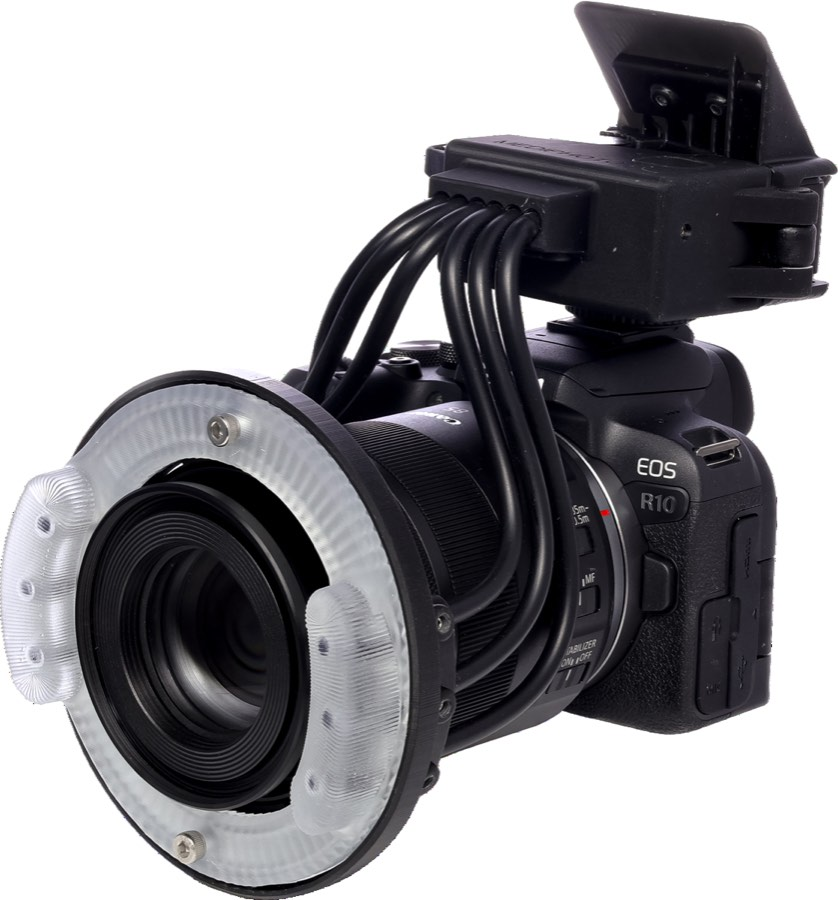
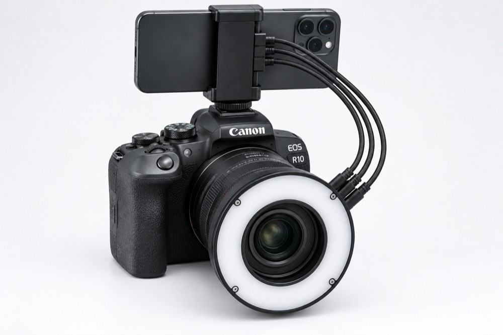
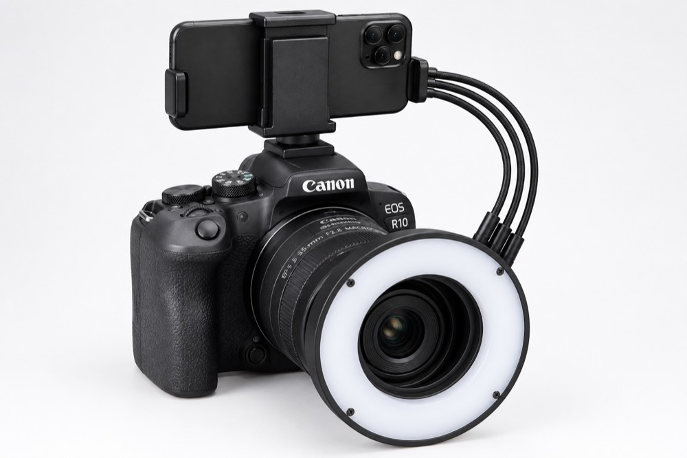

2026-11-25 시험. 사진 한 장으로 광고 컷을 만들어 준다는 도구를 우리 세트에 써 봤다. 실물 사진과 나란히 놓고, 같은 주문으로 두 번 뽑아 매번 같은 물건이 나오는지 확인했다. 쓴 도구는 참고 사진을 받지 못해서 글 설명만으로 만들었다.



| 부분 | 실물 | AI 가 그린 것 |
|---|---|---|
| 디퓨저 라이트 | 오돌토돌한 흰 링. 바깥 테두리가 검고 나사 세 개. | 매끈하게 빛나는 흰 고리. 나사 개수와 위치가 매번 다르고, 2회차에서는 크기까지 커졌다. |
| 전송 단말기 거치대 | 납작하고 넓은 검은 받침. 휴대폰이 낮게 눕는다. | 세로로 집는 집게 모양으로 바뀌었다. 두 장이 서로 다르다. |
| 연결선 | 네 가닥이 나란히 묶여 지나간다. | 세 가닥. 지나가는 길도 매번 다르다. |
| 렌즈 | 마크로 렌즈. 거리창과 스위치가 있다. | 2회차에서는 없는 렌즈 이름이 글자로 새겨져 나왔다. |
| 캐논 표기 | 정해진 자리에 정해진 글자. | 자리와 크기가 바뀐다. 남의 상표를 우리가 고쳐 그린 셈이 된다. |
마지막 방식이 가장 안전하다. 우리에게는 이미 배경을 딴 컷아웃이 있으므로, 제품은 찍은 그대로 두고 뒤에 깔 배경만 AI 로 만들면 된다.